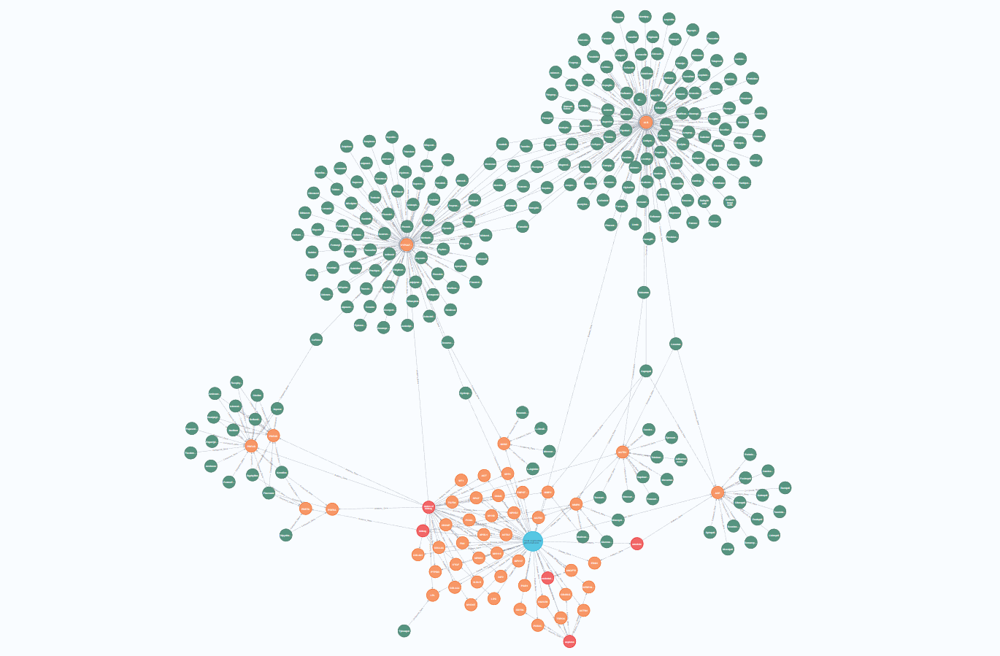
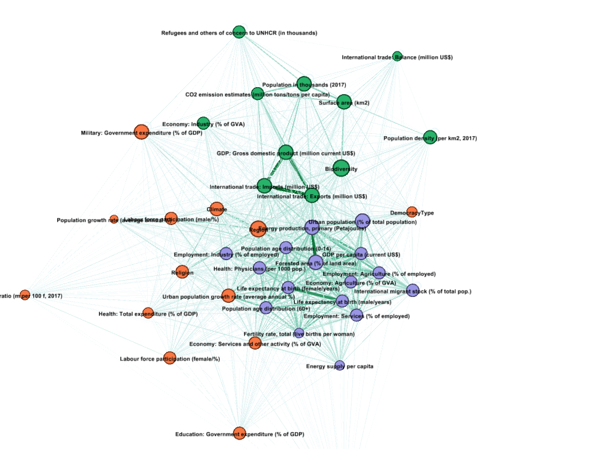
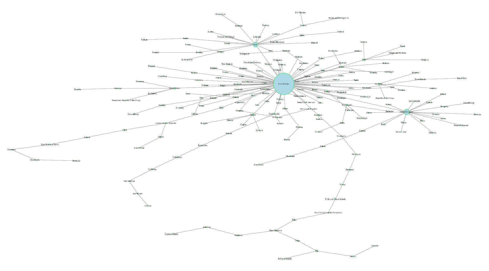

Εργασίες και πρακτικές ασκήσεις στην Ανάλυση Δεδομένων και την Στατιστική
Καλώς ήρθες στην σελίδα μου! Ονομάζομαι Κωνσταντίνος και είμαι απόφοιτος του προπτυχιακού προγράμματος σπουδών στα Μαθηματικά (Α.Π.Θ.), καθώς και μεταπτυχιακού προγράμματοςστον ευρύτερο χώρο της Επιστήμης των Δεδομένων. Αναλαμβάνω ασκήσεις και εργασίες βάσει των παρακάτω επιστημονικών θεματικών:
- Θεωρία Πιθανοτήτων και Στατιστική
- Ανάλυση Δεδομένων
- Έλεγχοι Υποθέσεων
- Οπτικοποιήσεις
- Μηχανική Μάθηση και Τεχνητή Νοημοσύνη
- Βάσεις Δεδομένων
Χρησιμοποιώντας, κυρίως, τα παρακάτω προγραμματιστικά περιβάλλοντα και εργαλεία:
Ρίξε μια ματιά παρακάτω για να τσεκάρεις μερικά παραδείγματα, καθώς και να βρεις τα στοιχεία επικοινωνίας μου!
1: Προτετοιμασία και καθαρισμός Δεδομένων
Πρώτο στάδιο σε κάθε πρότζεκτ που περιλαμβάνει οποιασδήποτε φύσεως δεδομένα αποτελεί η κατάλληλη προετοιμασία τους. Αυτό συμβαίνει καθώς τις περισσότερες
φορές που εργαζόμαστε με δεδομένα που αντλούμε από τον πραγματικό κόσμο, αυτά είναι πιθανό να περιέχουν ατέλειες και ανωμαλίες.
Η προετοιμασία δεδομένων περιλαμβάνει διάφορες διαδικασίες όπως: τον καθαρισμό τους (data cleaning), την αντιμετώπιση των απουσιάζουσων τιμών
(handling NA values), την αντιμετώπιση των διπλότυπων εγγραφών (duplicate values),
την αντιμετώπιση των ακραίων τιμών (outliers) και την μετατροπή των δεδομένων σε μορφή που να είναι κατάλληλη (data type corrections)
για την μετέπειτα ανάλυση και μοντελοποίηση τους. Παρακάτω, παρατηρούμε ένα σύνολο δεδομένων πριν και μετά την προετοιμασία και καθαρισμό του.
Πριν την προτετοιμασία
Μετά την προτετοιμασία
2: Ανάλυση Δεδομένων και Στατιστική
Η στατιστική ανάλυση αποτελεί, συνήθως, το κύριο μέρος σε ένα πρότζεκτ στον κλάδο της Στατιστικής και της ανάλυσης δεδομένων,
καθώς ασχολείται με την περιγραφή, την ερμηνεία και την εξαγωγή συμπερασμάτων από τα δεδομένα. Περιλαμβάνει την εφαρμογή των κατάλληλων
μαθηματικών εργαλείων και γραφημάτων για το εκάστοτε είδος ανάλυσης που επιθυμούμε. Γενικότερα, η στατιστική ανάλυση που διενεργείται σ'
ένα πρότζεκτ εξαρτάται από ποικίλους παράγοντες, με κυριότερους την φύση των μεταβλητών που μελετάμε και τον απώτερο στόχο της έρευνας που διεξάγουμε.
Έτσι, πρέπει κάθε φορά να είμαστε σε θέση να επιλέγουμε ορθά τα εργαλεία και τον συνδυασμό μεθόδων που χρησιμοποιούμε, έτσι ώστε να αυξήσουμε την παραγωγικότητα και αποτελεσματικότητα μας.
Ενδεικτικά, το κομμάτι της ανάλυσης μπορεί να περιέχει την εφαρμογή περιγραφικής στατιστικής, τη διενέργεια ελέγχων υποθέσεων,
την εφαρμογή μεθόδων πολλαπλής συγκριτικής ανάλυσης μέσω γραφημάτων, την εφαρμογή μεθόδων πολλαπλής γραμμικής παλινδρόμησης, τη δημιουργία μοντέλων πρόβλεψης με αλγόριθμους μηχανικής μάθησης κ.α.
Παρακάτω, ξεχωρίζουμε μερικά ενδεικτικά συγκριτικά γραφήματα μεταξύ διαφορετικού τύπου ζευγαριών μεταβλητών.
Ποιοτικές μεταβλητές
Ποσοτικές μεταβλητές
Ποιοτική - Ποσοτική μεταβλητή
Ποιοτική - Ποσοτικές μεταβλητές
Χάρτης Πληροφορίας / Πίνακας συσχετίσεων
3: Και...πολλά άλλα
Στον κόσμο της επιστήμης των Δεδομένων (Data science), οι εφαρμογές δεν περιορίζονται σε μια μονόπλευρη στείρα ανάλυση ή σε κάποιο συγκεκριμένο μόνο πεδίο μεταβλητών (π.χ. δημογραφικές).
Η ικανότητα προσαρμογής μας στις ανάγκες του προβλήματος και η ευελιξία μας στην επιλογή των κατάλληλων εργαλείων και μεθόδων αποτελούν τον πυρήνα της επιτυχίας μας. Στη συνέχεια, θα δεις
τέτοια παραδείγματα από την πρακτική μου εμπειρία με μοντελοποιήσεις:
- Χρονολογικών δεδομένων (Time series)
- Γεωχωρικών δεδομένων (Geospatial data)
- Δικτύων / Γράφων (Networks / Graphs)
Χρονοσειρές
Δίκτυα / Γράφοι



Γεωγραφικά δεδομένα
Στοιχεία επικοινωνίας
Κωνσταντίνος - Μαθηματικά & Ανάλυση Δεδομένων
Αν θες περαιτέρω πληροφορίες, μην διστάσεις να επικοινωνήσουμε!
Email: kostasmath97@gmail.com
Discord: Discord